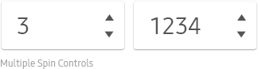
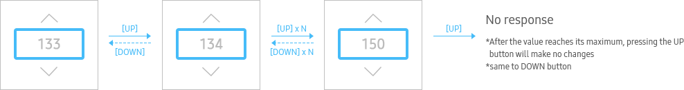
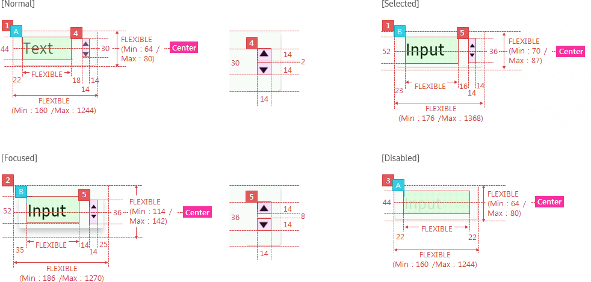

Spin Control
C_SPINCONTROL
- Definition
- Spin Control is used for items with continuously changing values when users can easily predict a set of values.
- Usage
-
- - You can use one to four separate spin controls to adjust values.
- - When you use multiple spin controls, adjust the valid values of the relevant other spin controls based on the user's last setting.
- - When using multiple spin controls, you can display a delimiter between spin controls.
- 
- Interaction
-
- - When a valid value is entered, the next item will be focused on.
- - When an invalid value is entered, the previous value will be returned and the current item will be still focused on.
- - When a valid value is entered, the changed value will be saved and the next item will be focused on.
- - At the last item, it will remain focused.
- Up/Down
- 
- Up/Down long press
- Entering Numbers
- Specs
-
- Properties
-
- Spin control consists of the following elements:
-
- 1. Text (Mandatory)
-
- - If there is no default value,
- . Numeric values : Display hyphens (-) as many as the number of digits, in the spin box
- . Non-numeric values : Display four consecutive hyphens (----) in the spin box
- - Ensure that a spin control always displays a selected value except when users are entering a value.
- - If there is no default value,
- 2. Icon (Mandatory)
-
- - Up/Down arrow indicator
- - Make the arrow dimmed if users cannot progress in a direction any longer
- Property Table
-
C_SPINCONTROL PROPERTY USE VALUE ADDITIONAL Text ◎ <<value>>-<<value>>, <<default value>> value range (start value–end value) Icon ◎ - - Visual
-
- GUI
-
- C_SPINCONTROL_WHITE
- 
- Motion
-
- C_SPINCONTROL_BASIC
LINK : C_INPUTFIELD

- *Tags :
- Time Picker, Date Picker